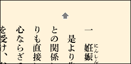

.bookをダウンロードする方法
１）T-Timeをインストールする。
.bookを表示するには、最新ののT-Time機能限定版（バージョン2.1.1）が必要です。
最新のT-Time機能限定版は、こちらからダウンロードしてください。
２）.bookを表示する。
３）マウスを.bookの真ん中へ持っていき、下のような矢印を表示させる。

４）マウスを押したままにし、ポップアップを表示させる。
５）その中の「T-Timeで読む」を選ぶ。
６）T-Timeによって、新たなウィンドウにファイルが表示される。
７）その表示されたファイルは、ハードディスクの中の「My Documents」フォルダ（Windowsの場合）、デスクトップ上の「T-Pot」フォルダ（Macintoshの場合）に保存される。
８）保存された.bookファイルは、ダブルクリックすることにより、インターネットに接続しなくてもT-Timeで開くことができる。